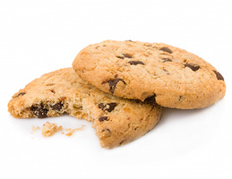
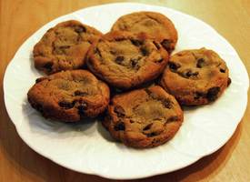

Ciastka
Ciastko - rodzaj słodkiego wyrobu cukierniczego o różnorodnych kształtach, smakach, wielkości i sposobach przygotowywania. Ciastka są mniejsze od ciast i przeznaczone na jedną porcję.
Ciastka wytwarzane są z różnych rodzajów ciasta (francuskiego, drożdżowego, kruchego i innych) oraz rozmaitych dodatków, którymi mogą być np. kremy, lukry, owoce, galaretka czy bita śmietana.
Ciastka mogą być przyrządzane z dużych blatów ciasta przekładanych masą i krojonych na mniejsze porcje, jak wuzetka albo karpatka. Takie ciastko ma wówczas kształt zbliżony do sześcianu lub prostopadłościanu. Inne ciastka składają się ze specjalnie wypiekanych części, które przekłada się nadzieniem (np. eklery albo ptysie). Te typy ciastek, ze względu na zastosowany rodzaj ciasta i krem, są mało trwałe i sprzedawane są głównie w cukierniach na sztuki.
Drugi rodzaj stanowią ciastka bardziej trwałe, kruche i suche, wytwarzane w specjalnych foremkach, formowane szprycą cukierniczą (ten sposób kształtowania nie nadaje się do ciasta o rzadkiej, płynnej konsystencji – biszkoptowe, ucierane) lub kręcone przez maszynkę do mięsa. Tego rodzaju wyroby są fabrycznie pakowane i sprzedawane po kilka-kilkanaście w sklepach; rzadziej na wagę w cukierniach. Przykłady: biszkopty, markizy, pierniczki, makaroniki.
Ciastka niekoniecznie muszą być wytwarzane ze słodkiego ciasta – istnieją bowiem ciastka słone, takie jak krakersy.

